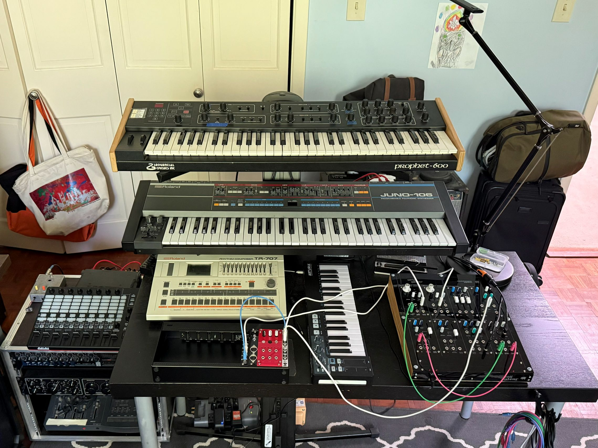

Notes
I bought a Juno 106 from Japan in March. It was a reasonably good deal, so I had a very strong suspicion that it would arrive with some issues and as expected it needed two new voice modules. These six 80017A boards, which are pretty much the secret sauce that makes the Juno 106 sound the way it does, were "protected" by Roland by encasing them in epoxy to prevent prying eyes from learning (and thus learning how to copy) the chips on board. Unfortunately over the past forty years the epoxy has almost always broken down in these cards, causing short circuits and almost invariably requiring replacement. Two of the six were bad in this synth, and since I don't really feel like having to go through all of this again in a few years I opted to replace all six with the Analogue Renaissance clones sold by Syntaur. It wasn't painless but it went fine, and the synth sounds amazing.
I've got a hopefully fairly stable stack of synths now: the Prophet 600, the Juno 106, and the Moduleur semi-modular that I built. I've got the TR-707 as a drum machine and my 4ms Pod64x to try out different modules. So now I guess I can actually try to make some music?
This track is an attempt to get to know this stack a little better. It started with a cold synth patch from the Juno so I called it Kalte Nacht (German for "cold night".) The Prophet patch in here is also cool; a warbly warm pad with portamento that almost reminds me of Portishead somehow.